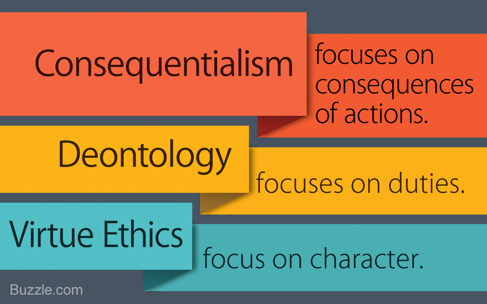

Overview
Important Definitions

Credit to Public Domain Pictures user Gerd Altmann
- Ethics
- Ethics refers to principles present in a given environment, whether or not something is thought to be good in the context of a community or society.
- Morals
- Morals refer to personal principles, whether or not an individual would consider something good or bad.
- Philosophy
- The study of the fundamental truths present in the world around us and all of its aspects.
- Subjectivity
- The assertion that what is being described (usually a thing), is dependent on how it is perceived. In relation to ethics, different people will perceive actions differently (a certain individual may perceive something as bad, while another may perceive it as good).
Overview of Different Types of Ethical Philosophies
Credit to Buzzle.com
Picture link| Philosophy | Description | Associated Philosopher(s) |
|---|---|---|
| Consequentalism | The outcome of the decision or action determines whether or not it is ethical. | John Stuart Mill |
| Utilitarianism | Derived from consequentalism, this philosophy operates under the premise that in order for something to be ethical, it needs to prioritize the hapiness and well-being of the people involved no matter the cost. | John Stuart Mill |
| Deontology | In order for something to be ethical, you need to avoid bad actions, and try to take good actions. | Imanuel Kant |
| Virtue Ethics | The character you show through your actions is the determining factor in whether or not something is ethical. | Aristotle |
Back to Top